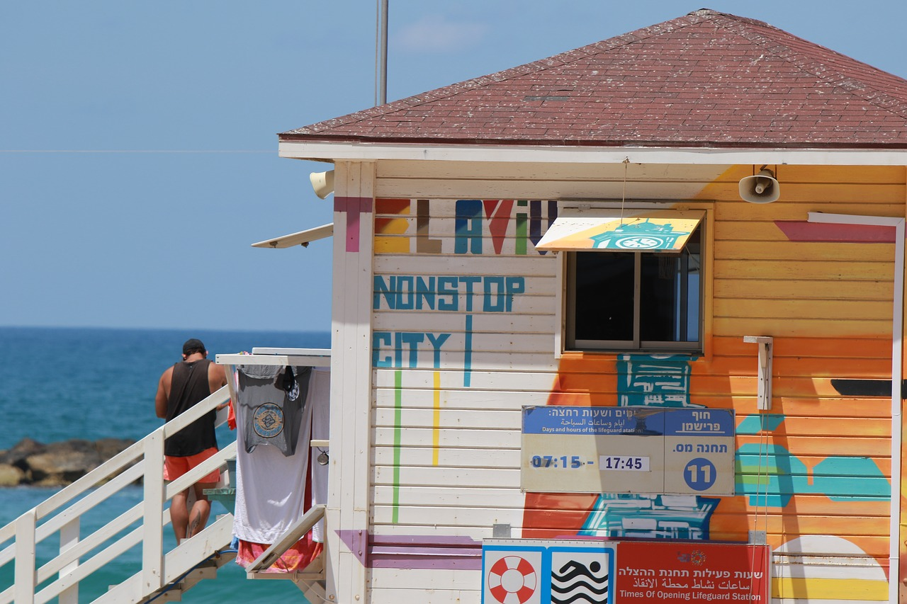

Tel Aviv Travel Tips: Everything you need know before you go

Ten interesting facts about Tel Aviv:
- Tel Aviv has at least 300 days of sun per year.
- Tel Aviv is also known as the City That Never Sleeps.
- The old town of Tel Aviv is called Jaffa.
- With over 200,000 attendees, Tel Aviv boasts the largest gay pride parade in Asia.
- National Geographic lists Tel Aviv as one of the top 10 beach cities in the world.
- 30,000 dogs live in Tel Aviv, and the city is considered the world’s most dog-friendly metropolis.
- Tel Aviv is a paradise for vegans.
- The culinary scene in Tel Aviv is considered one of the most creative in the world.
- There are over 100 sushi restaurants in Tel Aviv.
- The Meier-on-Rothschild Tower is the tallest residential building in the city at 155 meters.
The best time to travel to Tel Aviv
No question, the off-season. In July and August, Tel Aviv is overrun with tourists. Plus it gets really hot in the summer months. Temperatures rise to 31-34 degrees, and the humidity reaches over 80 percent. That means you’ll be sweating. A lot. If you like hot weather, then you’ll really enjoy yourself here because the heat shows no mercy, not even at night. The positive thing about these months is the general mood in the city. The people live outside. Even at night. Eating a watermelon at a beach café at three o’clock in the morning has a lot of charm.